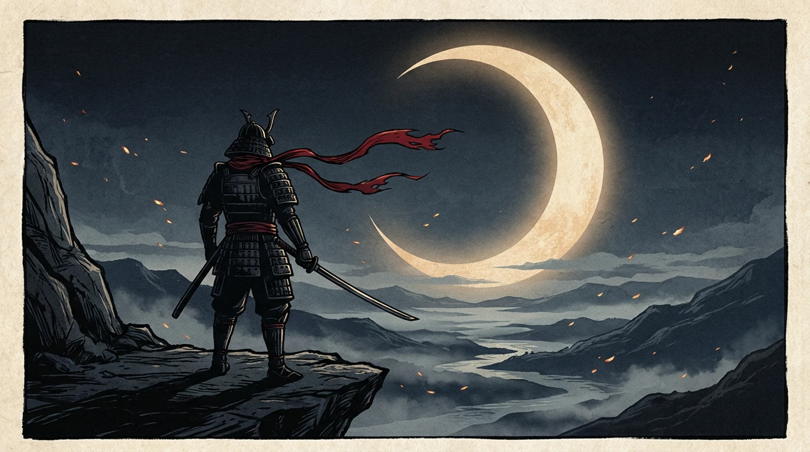
Under the golden crescent, a masterless man remembers how it began.
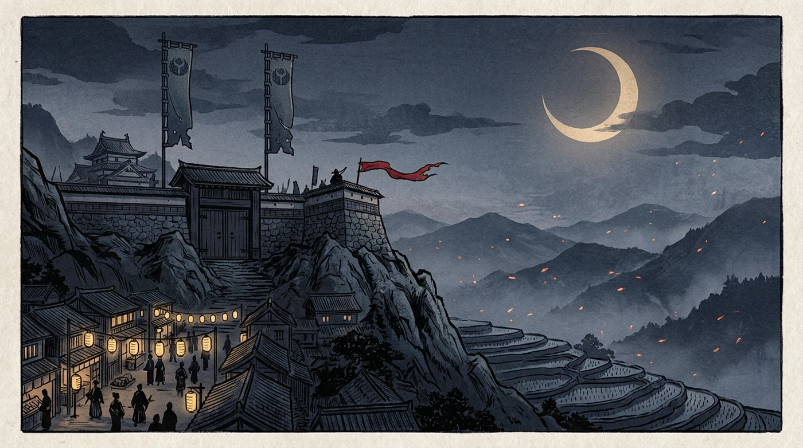
One clan. One home. Above its gate flew two banners — two daimyō ruled the same castle, and we served them both.
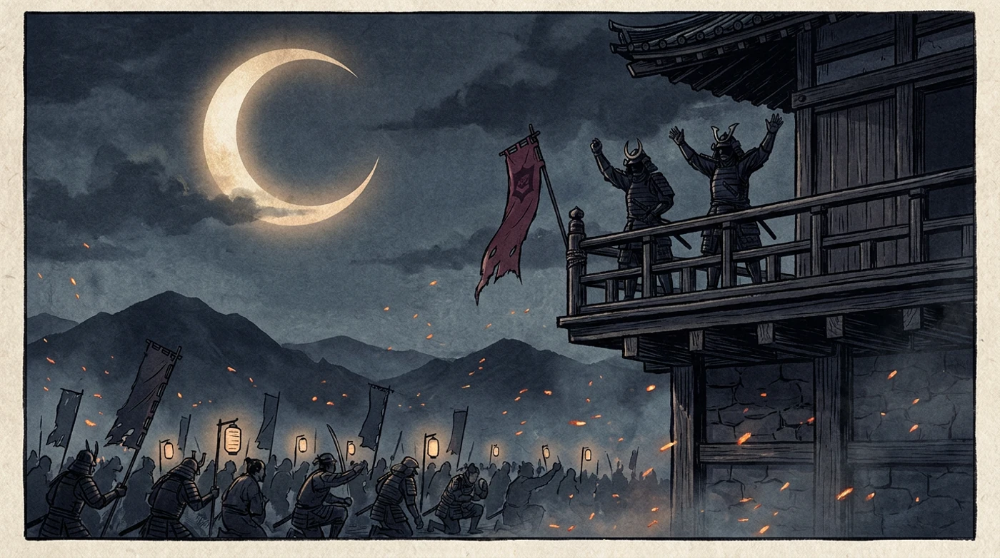
From the high balcony the two daimyō promised a golden age. We believed. We built. We held.
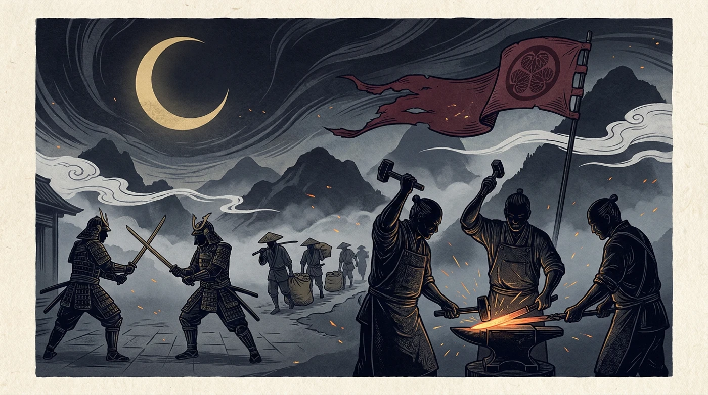
Through every storm the clan held the line — smiths, farmers, warriors, one people. LOYALTY was our word, and we kept it to the very end.
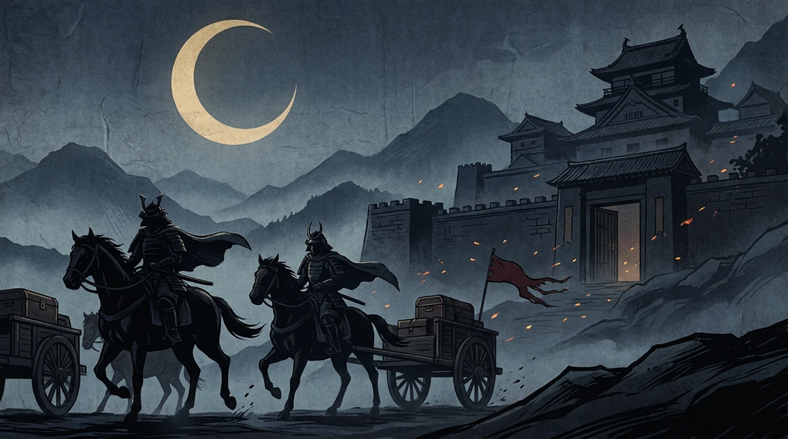
But one night, both daimyō rode out with the treasury — and did not look back. They left the gate hanging open behind them.
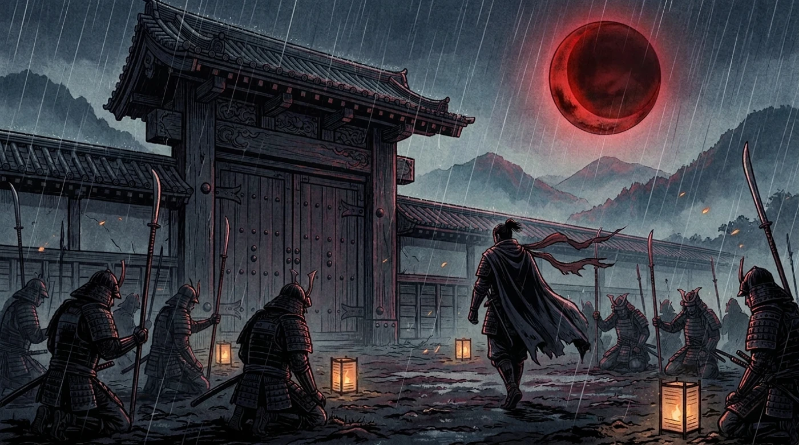
No war beat us. No enemy broke us. Our own daimyō left us in the dust.
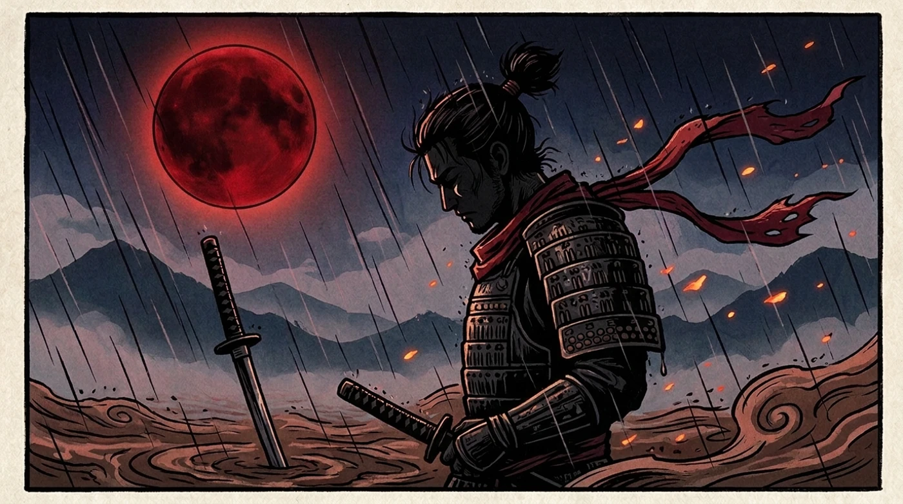
A samurai abandoned by his master has a name. They meant it as an insult: RONIN.
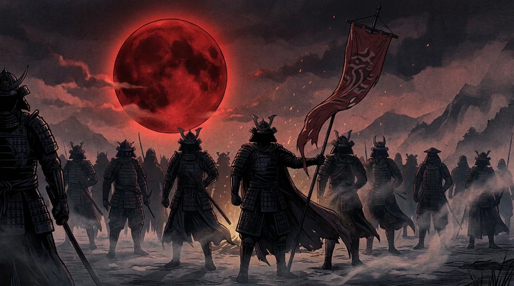
Then we looked around the empty courtyard — and understood. The clan had never been the daimyō. The clan was us. And we were still here.
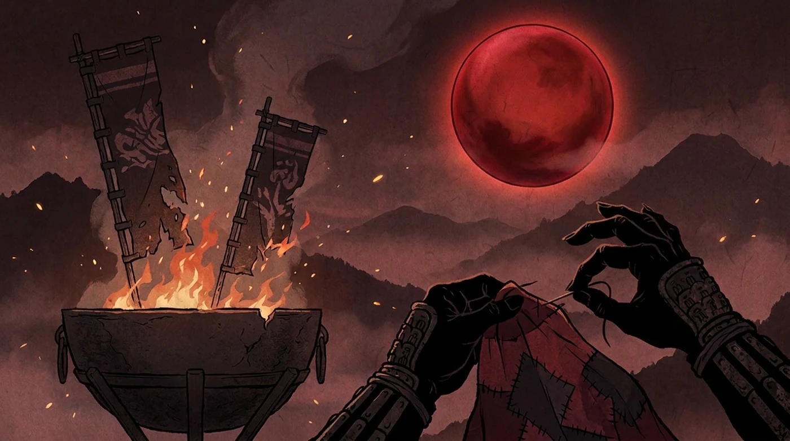
We burned the two dead banners and stitched one from the ashes. Crimson, like everything we had bled. Masterless — but never brotherless.
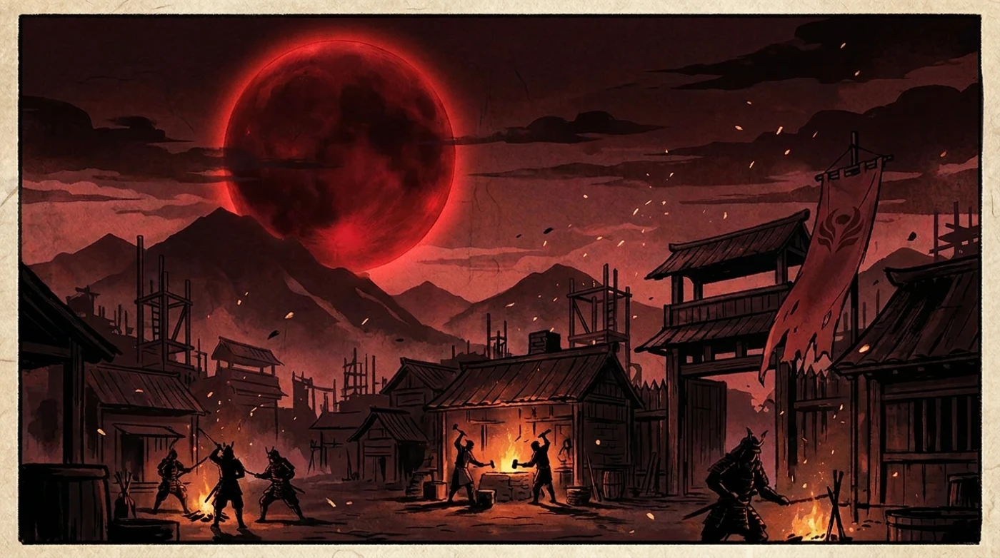
What daimyō abandon, brothers rebuild. The forge burned all winter. It burns still — stronger, because now it is ours.
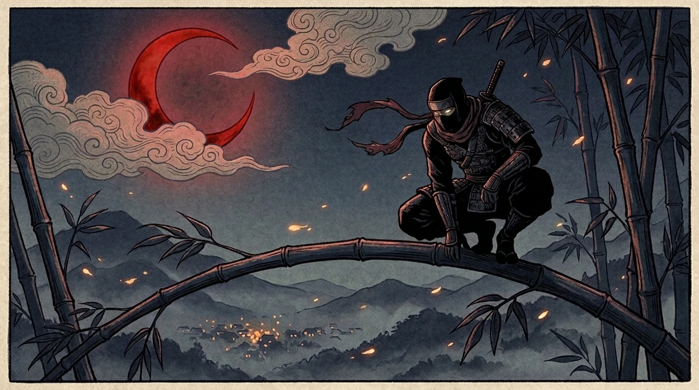
The old world watched from the dark and called us dead men walking.
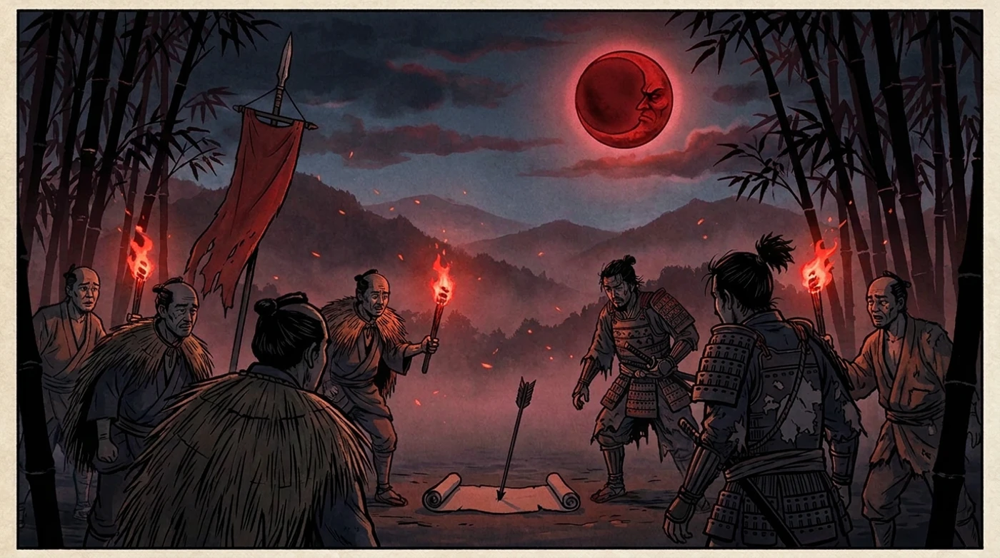
They sent their verdict on a black arrow: "You are nothing without masters."
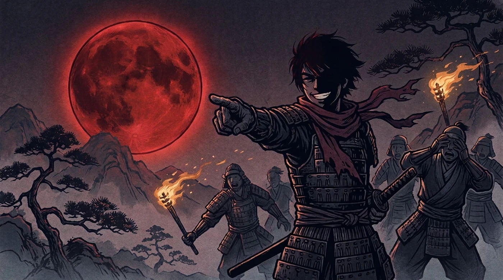
"Good," he said, grinning like the crescent moon. "We were never nothing. A masterless blade bows to no one."
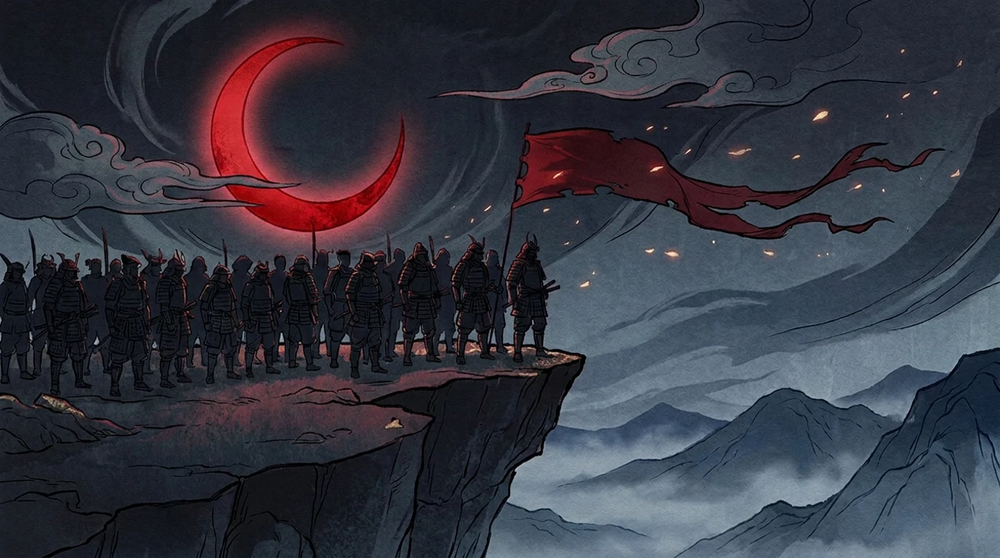
The community is the clan now. One banner. Ten thousand blades. And the clan grows.